Spitalul românesc II: acreditarea între promisiune și paradox
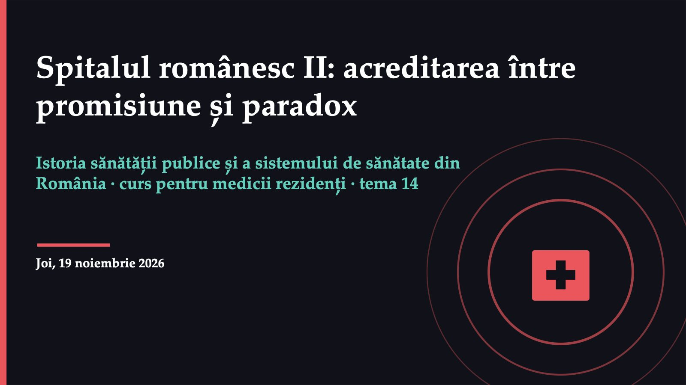
1 / 65Bună ziua. Tema de azi este acreditarea spitalelor: ce promite, cum se face și ce poate vedea. O citim în două feluri: întâi ca instrument, pe texte și pe date, apoi ca meserie, într-o conferință de morbiditate și mortalitate pe un focar de infecții asociate asistenței medicale.
?
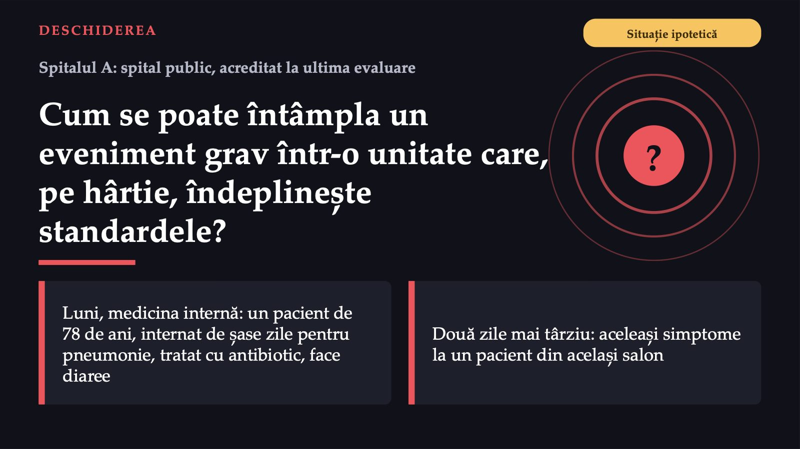
2 / 65Spitalul A nu există; este o situație construită pentru curs, cu detalii plauzibile pentru un spital românesc și fără persoane, secții sau spitale reale. Are certificat de acreditare, protocol de prevenire a infecțiilor, program anual de supraveghere și un serviciu de prevenire a infecțiilor. Cu toate acestea, în câteva zile, mai mulți pacienți din aceeași secție fac aceeași infecție. Ne întoarcem la el în a doua parte a cursului și îl reconstituim zi cu zi.
Două întrebări pentru azi
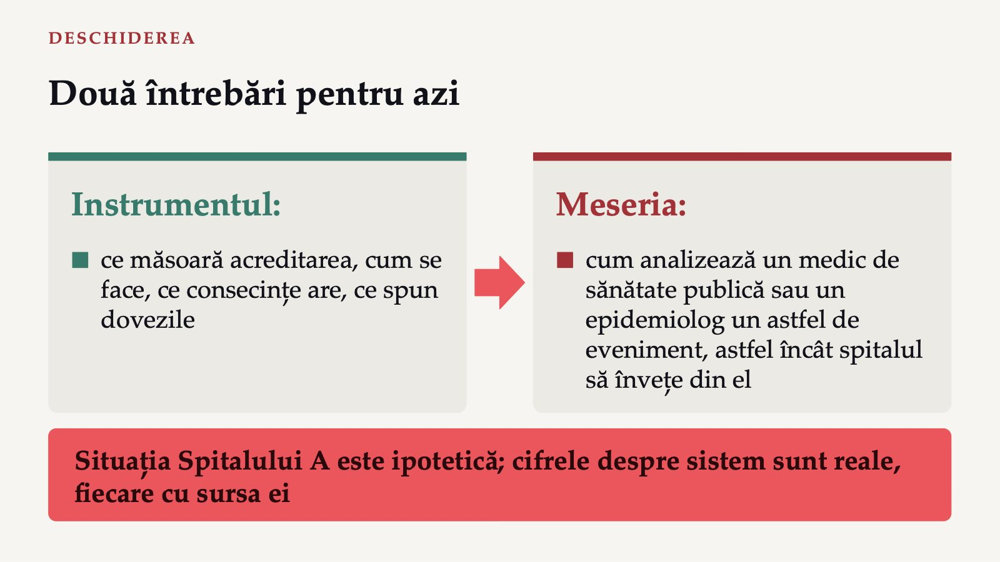
3 / 65Prima parte urmează prezentarea temei: acreditarea ca instrument. A doua parte este o conferință de morbiditate și mortalitate pe Spitalul A. Situația este construită din două motive. Un caz real, cu spitalul și oamenii lui, ar muta discuția spre vinovați, iar o conferință de morbiditate și mortalitate are regula opusă. Apoi, situația poate fi construită astfel încât să atingă exact punctele pe care acreditarea le verifică și pe cele pe care nu le poate verifica.
?
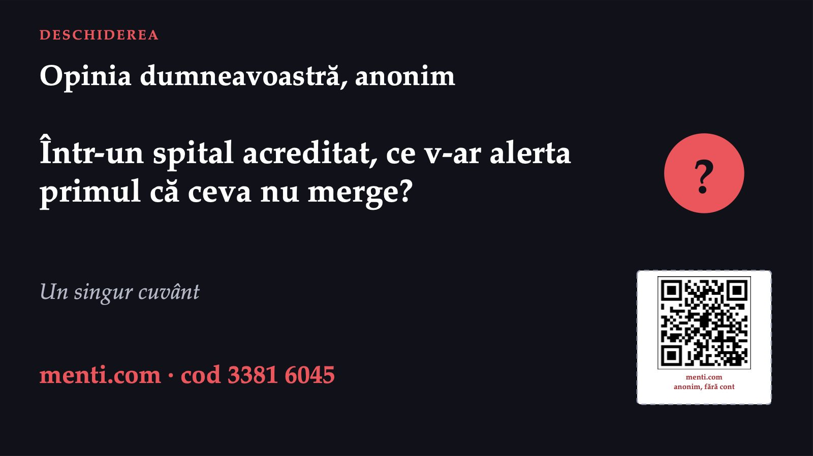
4 / 65Întrebarea cere o opinie și nu se notează. Un singur cuvânt: primul semn după care ați ști, ca medic în acel spital, că ceva nu merge.
Cronologia acreditării spitalelor
![CRONOLOGIA ACREDITĂRII ȘI MODELUL LUI DONABEDIAN Cronologia acreditării spitalelor 2006 Legea nr. 95/2006, Titlul VII: acreditarea spitalelor, prevăzută 2008–2009 Comisia Națională de Acreditare a Spitalelor; acreditarea începe efectiv, pe cinci ani 2015 Autoritatea Națională de Management al Calității în Sănătate (ANMCS), care preia comisia (HG nr. 629/2015) 2017 Legea nr. 185/2017 privind asigurarea calității în sistemul de sănătate 2018 Ordinul președintelui ANMCS nr. 10/2018: categoriile celui de-al doilea ciclu 2025 o nouă ediție a standardelor, în lucru; unități înscrise în al treilea ciclu](diapozitive/C14/005.jpg) 5 / 65
5 / 65Legea nr. 95/2006 a prevăzut acreditarea spitalelor. După profilul sistemului de sănătate al României publicat în 2016 de Observatorul European al Sistemelor și Politicilor de Sănătate, acreditarea a început efectiv în 2009, printr-o comisie de acreditare, și se acorda pe cinci ani. Ediția din 2026 a profilului precizează că ANMCS a fost înființată în 2015, sub coordonarea directă a prim-ministrului, și a preluat comisia constituită în 2008. Cadrul actual este Legea nr. 185/2017; în 2018, ordinul nr. 10/2018 a stabilit categoriile pentru al doilea ciclu. Unele date din prezentarea temei nu se confirmă: anul 2010 pentru autoritate și prima rundă din 2011–2014, cu peste patru sute de spitale evaluate. Nu le folosim.
Donabedian: structură, proces, rezultat
![CRONOLOGIA ACREDITĂRII ȘI MODELUL LUI DONABEDIAN Donabedian: structură, proces, rezultat Donabedian: o structură bună face mai probabil un proces bun; nu îl garantează Structura cadrul: clădirea, echipamentele, numărul și calificarea personalului → se verifică ușor, la o vizită Procesul ce se face efectiv în îngrijire, inclusiv comunicarea cu pacientul → se verifică greu, în timp: noaptea, în weekend Rezultatul starea de sănătate, satisfacția, costurile; la spital: complicațiile, decesul, infecțiile dobândite → cere date continue, raportate corect](diapozitive/C14/006.jpg) 6 / 65
6 / 65Calitatea îngrijirilor se evaluează prin trei componente legate între ele: structura, procesul și rezultatul. Ideea centrală a modelului este că o structură bună face mai probabil un proces bun, iar un proces bun face mai probabil un rezultat bun; probabilitatea nu este o garanție. Exemplele de spital sunt ale noastre. Pentru evaluarea unui spital, consecința este practică: o evaluare care vine o dată la câțiva ani vede bine structura, vede parțial procesul și vede rezultatul numai dacă spitalul îl măsoară și îl raportează corect. Prezentarea trimite la o lucrare din 1988 în „Milbank Quarterly”; lucrarea lui Donabedian din 1988 a apărut în revista JAMA, iar citatele nu le reproducem.
Ce spun dovezile despre efectele acreditării
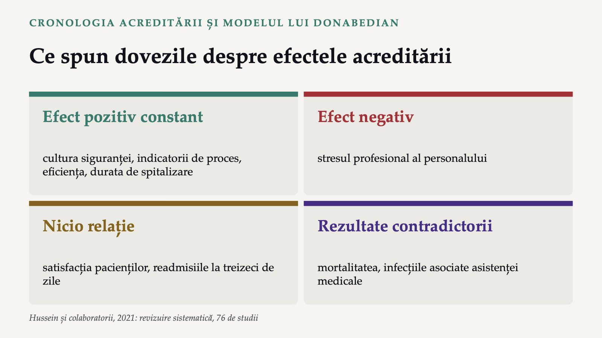
7 / 65Este cea mai recentă sinteză consultată, publicată în „BMC Health Services Research”. Concluzia autorilor este prudentă: există dovezi rezonabile că acreditarea se asociază cu îmbunătățiri, dar relația cauzală nu este demonstrată. Pentru Spitalul A, certificatul de acreditare este un argument despre structură și, parțial, despre proces, nu o dovadă despre rata infecțiilor. Studiul atribuit în prezentare lui Braithwaite și colaboratorii, din 2017, nu a putut fi verificat: identificatorul dat duce la o altă lucrare.
Legea nr. 185/2017, art. 2 lit. e)
![AUTORITATEA Legea nr. 185/2017, art. 2 lit. e) Legea nr. 185/2017 art. 2 lit. e) „acreditarea unităților sanitare - procesul de validare a conformității caracteristicilor serviciilor de sănătate efectuate de către unitățile sanitare, cu standardele ANMCS adoptate de către ANMCS și aprobate în condițiile prezentei legi, în urma căruia unitățile sanitare sunt clasificate pe categorii de acreditare pentru a conferi încredere în competența tehnico-profesională și organizatorică a acestora” validare a conformității · clasificare pe categorii · încredere](diapozitive/C14/008.jpg) 8 / 65
8 / 65Definiția decide mai multe întrebări de mai departe, de aceea o citim integral. Trei elemente contează. Acreditarea este o validare a conformității cu standarde, nu o măsurare directă a rezultatelor clinice. Ea se încheie cu o clasificare pe categorii, nu cu un simplu „da” sau „nu”. Scopul declarat este încrederea, adică informația pentru pacienți, plătitori și autorități.
Procedura, după Legea nr. 185/2017
 9 / 65
9 / 65Evaluarea este analiza nivelului de conformitate făcută de evaluatori externi, independenți față de părțile interesate, la cererea unității. Ciclul de acreditare este, în cuvintele legii, „intervalul de 5 ani de utilizare a unei ediții a standardelor ANMCS”. Reevaluarea se face în perioada de valabilitate a acreditării, din oficiu, la cererea unității sau a unor organisme îndreptățite. Categoriile le aprobă Colegiul director al ANMCS, cu avizul conform al Ministerului Sănătății, iar lista unităților acreditate se publică în Monitorul Oficial. Termenul de 4 ani din această lege și cel de 5 ani din Legea nr. 95/2006 curg de la momente diferite, înscrierea și autorizația sanitară, și coexistă. Afișarea categoriei pe clădire este o măsură de informare a pacientului, nu doar o formalitate.
−10
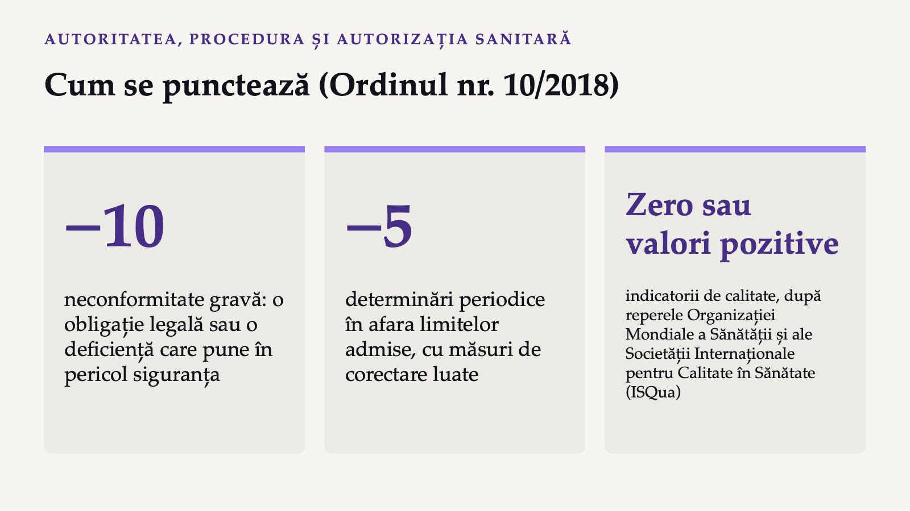
10 / 65Prezentarea descrie standardele ca fiind organizate în „10 capitole”; structura pe capitole nu a fost verificată în sursele consultate și o lăsăm deoparte. Ordinul privind categoriile descrie, în schimb, modul de punctare, iar indicatorii notați cu −10 sunt cei care contează pentru categorii.
Două acte diferite
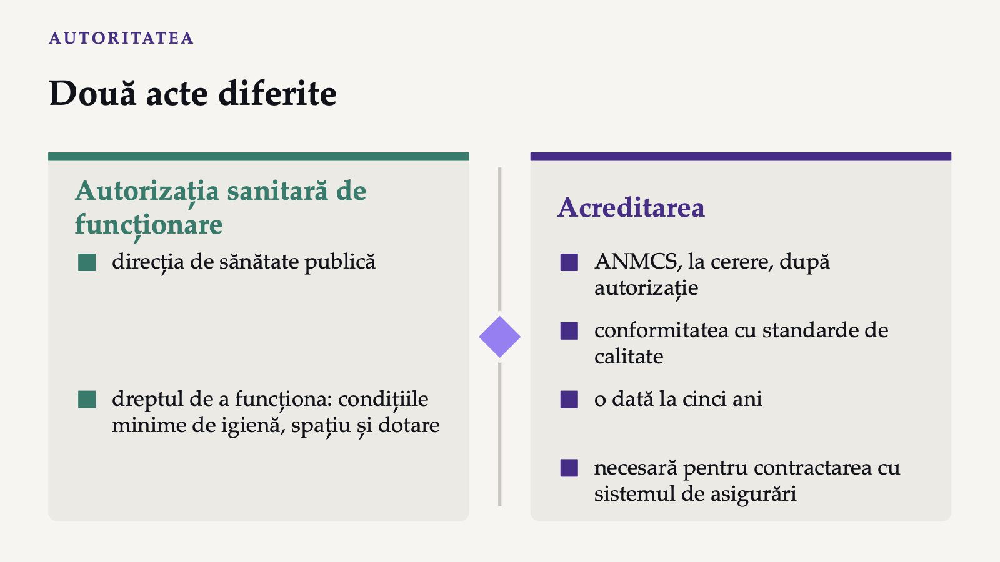
11 / 65Legea nr. 95/2006 spune explicit că autorizația sanitară dă dreptul de funcționare și că, după obținerea ei, spitalul intră, la cerere, în procedura de acreditare. Profilul din 2026 rezumă același lanț: autorizația vine de la direcția de sănătate publică, iar acreditarea se face o dată la cinci ani de ANMCS și este necesară pentru contractarea cu sistemul de asigurări.
Planul de conformare: anexa autorizației, nu pedeapsa acreditării
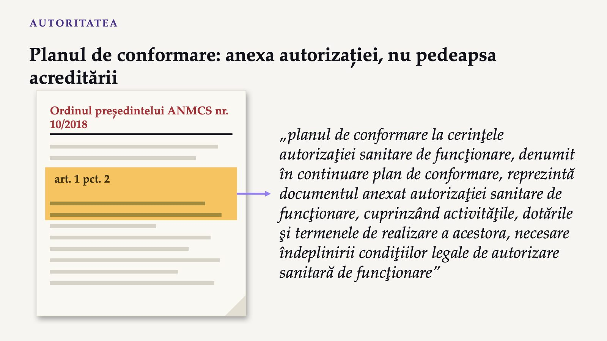
12 / 65Prezentarea numește fenomenul „plan de conformare perpetuu”. Juridic, planul de conformare nu este o pedeapsă a acreditării, ci o anexă a autorizației sanitare. Un spital poate, așadar, funcționa cu o autorizație care admite, temporar, că nu îndeplinește toate condițiile, cu condiția unui calendar de remediere. Ordinul ANMCS folosește existența și durata acestui plan ca unul dintre criteriile de încadrare în categoriile de acreditare.
Cele șase categorii ale celui de-al doilea ciclu (Ordinul nr. 10/2018)
![CATEGORIILE DE ACREDITARE ȘI INDICATORII CRITICI Cele șase categorii ale celui de-al doilea ciclu (Ordinul nr. 10/2018) Trei criterii: punctajul · indicatorii cu −10 neîndepliniți · planul de conformare și durata lui I acreditat ≥ 90% niciun indicator cu −10 neîndeplinit fără plan de conformare II acreditat cu recomandări ≥ 70% sub 10% plan de cel mult 12 luni III acreditat cu rezerve ≥ 51% sub 30% plan de cel mult 24 de luni IV acreditat cu încredere redusă aceleași praguri plan neasumat sau peste 24 de luni V decizie de prelungire a procesului ≥ 51% cel mult 50% VI neacreditat](diapozitive/C14/013.jpg) 13 / 65
13 / 65Prezentarea vorbește despre „Gr. I–III”, cu gradul I „minim”. Pentru al doilea ciclu, ordinul stabilește altceva: șase categorii, de la I, cea mai înaltă, la VI, „neacreditat”. Dacă planul de conformare al unei unități din categoria II nu este realizat în termen, unitatea poate cere prelungirea cu cel mult 12 luni și trece în categoria III; dacă planul categoriei III nu este realizat, trece în categoria IV. În categoria V, când încadrarea se datorează punctajului și indicatorilor, unitatea are cel mult 6 luni pentru a cere reanalizarea; fără această cerere, trece în categoria VI.
Pragurile comune categoriilor I–IV
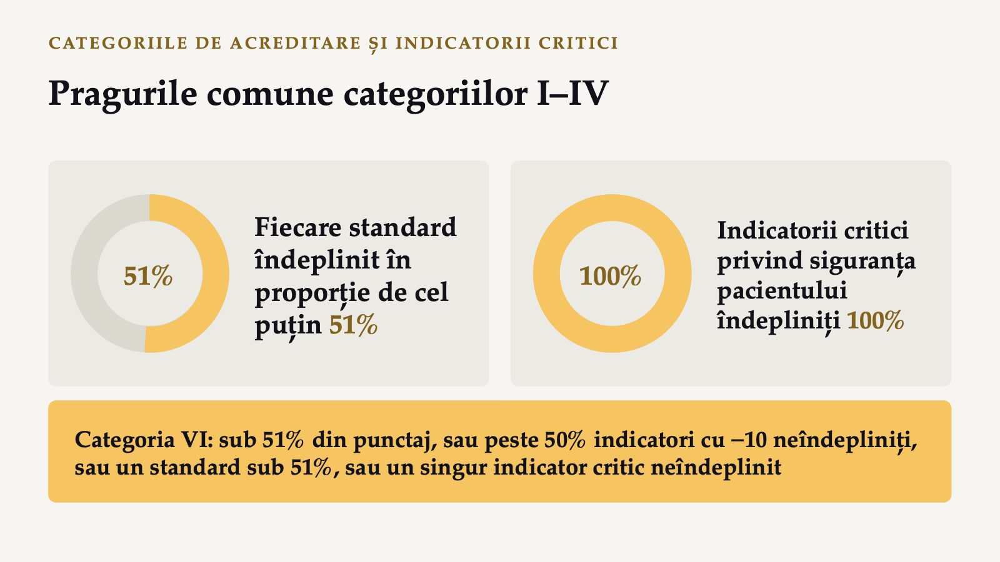
14 / 65Este de ajuns un singur indicator critic neîndeplinit pentru categoria VI. Un spital neacreditat se poate înscrie într-o nouă procedură în ciclul următor sau, la decizia Ministerului Sănătății, în același ciclu. Rămâne o neclaritate: forma consolidată a ordinului pune la categoria VI un punctaj sub 51% la unul sau mai multe standarde, iar la categoria V admite, prin excepție, același lucru; cum se împacă cele două prevederi nu este lămurit în textele consultate.
Indicatorul critic
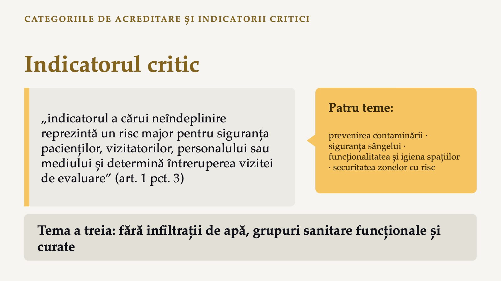
15 / 65Exemple din prima temă: transferul pacientului între salon și blocul operator și lipsa accesului neautorizat în blocul operator, în terapia intensivă și în neonatologie. Siguranța sângelui înseamnă trasabilitatea. Securitatea zonelor cu risc privește tablourile electrice, sursele de oxigen, depozitarea deșeurilor. Toate patru sunt verificabile la vizită: în limbajul lui Donabedian, sunt indicatori de structură și de proces observabil. Rețineți tema a treia; o regăsim la Spitalul A.
64
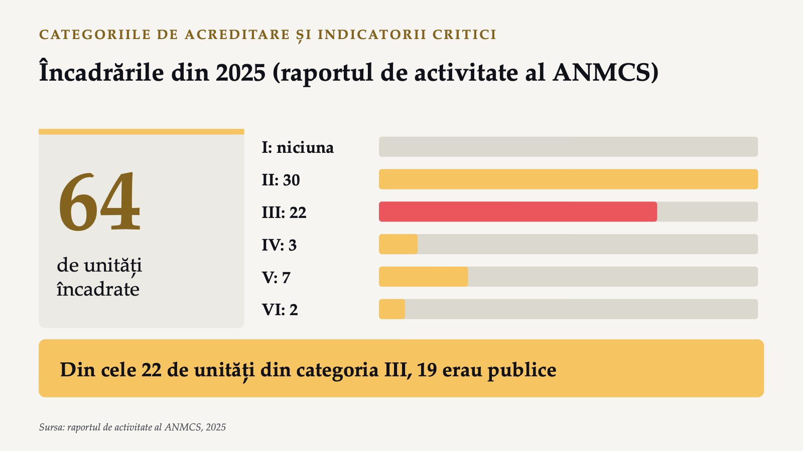
16 / 65Lectura corectă este limitată: este distribuția unui singur an, pe unitățile evaluate atunci, nu pe toate spitalele. Ea arată totuși că cea mai înaltă categorie lipsește din anul respectiv și că majoritatea unităților au fost acreditate cu recomandări sau cu rezerve, adică sub pragul categoriei I.
?
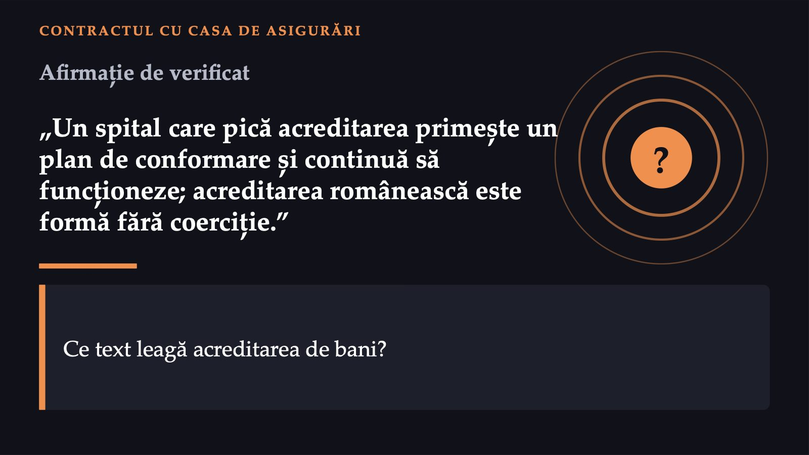
17 / 65Aceasta este teza prezentării temei: o unitate care nu obține acreditarea nu își pierde contractul cu casa de asigurări. O verificăm pe textele în vigoare. Principiul este general: înainte de a numi un instrument „fără coerciție”, citiți textul care îl leagă de bani și separați condiția de participare, adică ești în sistem sau nu, de condiția de performanță, adică cât de bine îndeplinești standardele.
Ce spun textele
![CONTRACTUL CU CASA DE ASIGURĂRI: CE COERCIȚIE EXISTĂ Ce spun textele Legea nr. 95/2006, art. 173 alin. (1) procedura nu poate depăși 5 ani; fără acreditare în acest termen, contractul cu casele de asigurări nu se poate încheia Art. 215 fără cererea de acreditare în 1 an de la autorizația sanitară, sau fără cererea unui nou ciclu cu 9 luni înainte de expirare: pierderea dreptului la finanțare din fonduri publice Contractul-cadru, HG nr. 521/2023, art. 84 alin. (1) lit. b) condiție de contractare: acreditat sau înscris în procesul de acreditare Art. 104 alin. (1) lit. b) dovada expirată sau revocată: contractul se suspendă, dacă furnizorul face dovada demersurilor de reînnoire](diapozitive/C14/018.jpg) 18 / 65
18 / 65Contractul-cadru îl citim în forma actualizată în ianuarie 2026. Cazurile de încetare a contractului, de la art. 105, nu privesc acreditarea, iar dovada acreditării sau a înscrierii trebuie să fie valabilă la încheierea contractului și reînnoită pe toată durata lui, după art. 86.
Coerciția: puternică pe participare, slabă pe nivel
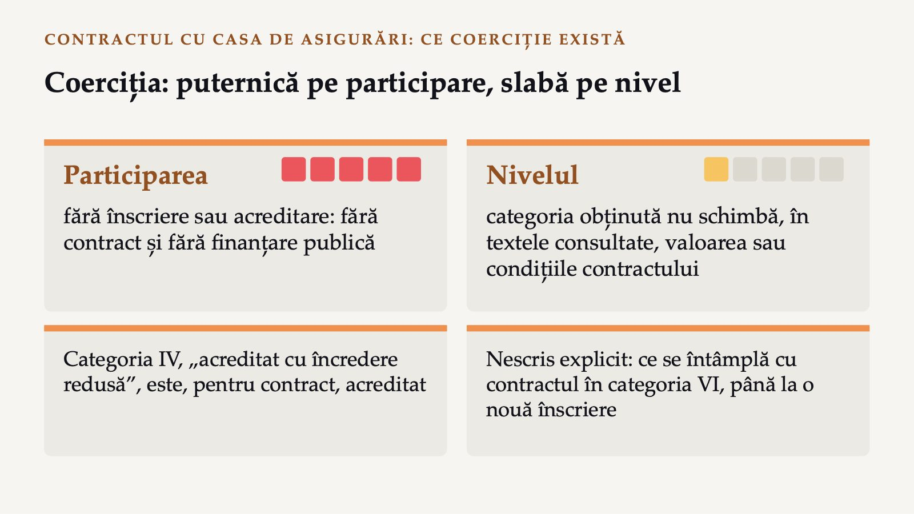
19 / 65Concluzia este mai fină decât „coerciție zero”. Planul de conformare ține de autorizația sanitară, nu de eșecul la acreditare, iar categoriile II–IV sunt categorii de acreditare. Coerciția există și este puternică pe participare. Este slabă pe nivel: textele consultate nu leagă categoria obținută de valoarea contractului sau de condiții suplimentare. Încadrarea categoriei IV ca „acreditat” pentru contract este lectura noastră, sprijinită pe denumirea categoriei și pe art. 84 din contractul-cadru.
A doua pârghie: răspunderea
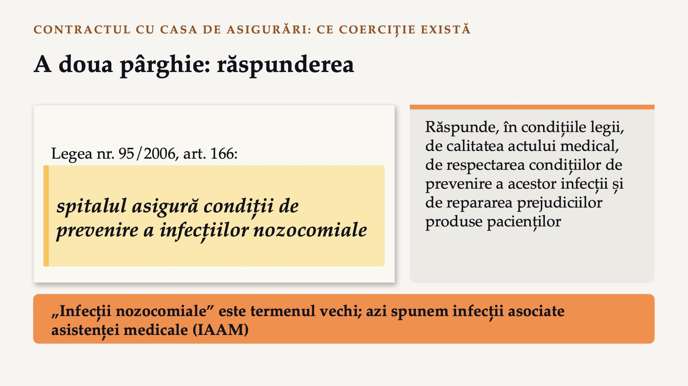
20 / 65Pe lângă contract, legea face spitalul răspunzător de prevenirea infecțiilor și de repararea prejudiciilor. Termenul din lege este cel vechi; în aceste note și în conferința din a doua parte a cursului folosim „infecții asociate asistenței medicale”.
?
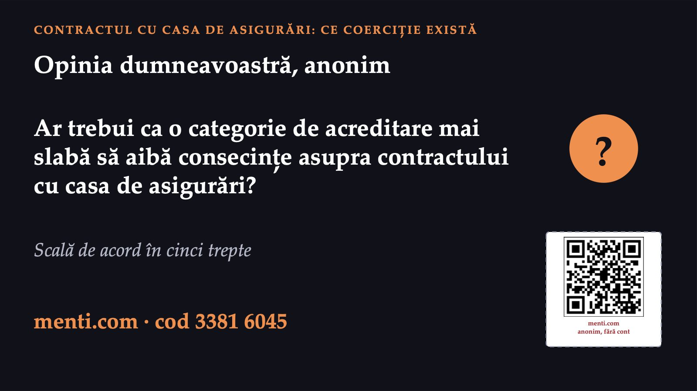
21 / 65Sursele nu închid această întrebare. O legătură între categorie și contract ar putea împinge spitalele spre a corecta, dar și spre a ascunde. Răspundeți după cum judecați dumneavoastră; nu există variantă bună și nu se notează.
Trei modele
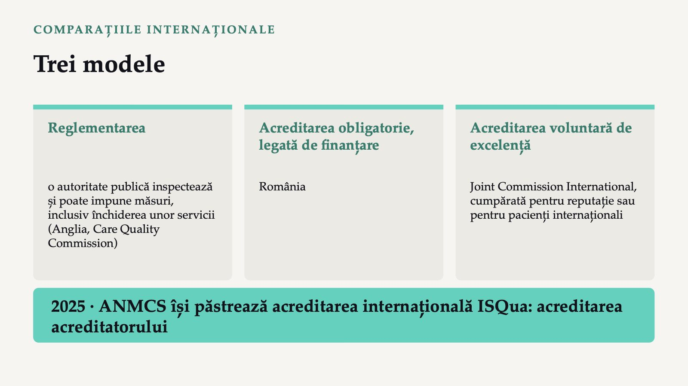
22 / 65Ca tipologie, distincția din prezentare este utilă și o păstrăm. Detaliile despre aceste sisteme, cum ar fi puterile exacte ale Care Quality Commission, spitalele românești private cu acreditare Joint Commission International sau sistemele francez și german, nu au fost verificate în sursele consultate. Acreditarea ISQua arată că procedura ANMCS respectă un standard internațional al procedurilor, nu că spitalele acreditate au rezultate bune.
Vocabularul siguranței pacientului (OMS, 2009)
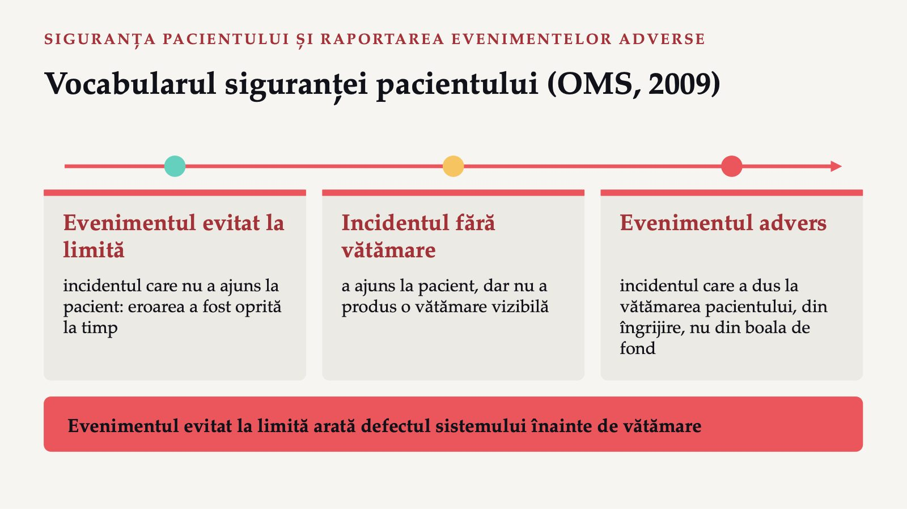
23 / 65Definițiile sunt cele ale Clasificării internaționale pentru siguranța pacientului, publicate de Organizația Mondială a Sănătății în 2009. Noțiunea-părinte este incidentul de siguranță a pacientului. În limba engleză, evenimentul evitat la limită se numește „near miss”: nu a ajuns la pacient. Nu îl confundați cu incidentul fără vătămare, care a ajuns la pacient fără să-l vatăme. Distincția contează pentru raportare: evenimentul evitat la limită arată defectul sistemului înainte ca pacientul să fie vătămat.
Modelul „brânzei elvețiene” (James Reason)
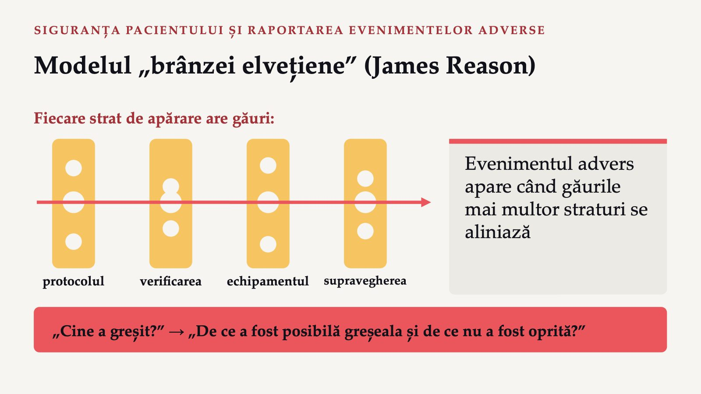
24 / 65Consecința practică a modelului este că a găsi ultima persoană care a greșit nu închide celelalte găuri. Abordarea centrată pe persoană întreabă cine a greșit; abordarea centrată pe sistem întreabă de ce a fost posibilă greșeala și de ce nu a fost oprită.
775
![SIGURANȚA PACIENTULUI ȘI RAPORTAREA EVENIMENTELOR ADVERSE Raportarea fără caracter acuzator, în lege Legea nr. 185/2017, art. 5 alin. (2) lit. b): ANMCS elaborează „o metodologie de identificare, analiză și raportare a evenimentelor adverse asociate asistenței medicale, fără caracter acuzator” Registrul Evenimentelor Adverse · rapoartele de analiză internă ale unităților Monitorizare continuă: 775 de unități cu paturi (Ordinul președintelui ANMCS nr. 298/2020) Fără caracter acuzator nu înseamnă fără răspundere](diapozitive/C14/025.jpg) 25 / 65
25 / 65Legea dă ANMCS și sarcina de a gestiona sistemul național de raportare. Raportul ANMCS pe 2025 descrie abordarea ca nepunitivă. Cele 775 de unități sunt cele acreditate în al doilea ciclu sau înscrise în al treilea. În spital, după profilul din 2026, raportarea către ANMCS trece prin structura de management al calității și prin medicul coordonator. Ce urmează este principiul, nu textul legii: raportul unui eveniment nu este folosit ca probă disciplinară împotriva celui care raportează, iar analiza caută cauzele de sistem; abaterile intenționate și neglijența gravă rămân supuse procedurilor obișnuite. Fără această separare, oamenii nu raportează.
Ce se raportează
![SIGURANȚA PACIENTULUI ȘI RAPORTAREA EVENIMENTELOR ADVERSE Ce se raportează 2022 (profilul din 2026) au raportat 37% dintre unitățile înregistrate căderi ≈ 40% nerespectarea prevenirii infecțiilor 18,5% erori de medicație 11% 2025 (raportul ANMCS) 286 de unități au raportat căderi 48,39% nerespectarea prevenirii IAAM 15,69% erori de medicație 10,16% Spitalele județene: nerespectarea prevenirii infecțiilor, a doua cauză, 29,55% Sursele: profilul din 2026 (pentru 2022) · raportul ANMCS (pentru 2025); aceeași scală pe ambele părți](diapozitive/C14/026.jpg) 26 / 65
26 / 65Două observații de metodă. Ponderile descriu ce se raportează, nu ce se întâmplă: căderile se văd și se raportează ușor, o infecție dobândită se atribuie îngrijirii mult mai greu. Apoi, valorile din 2022 și din 2025 vin din documente diferite, cu baze de calcul diferite; le citim fiecare cu anul ei, nu ca serie. Estimarea deceselor din Statele Unite din raportul „To Err is Human” și raportarea obligatorie „din 2012”, citate în prezentare, nu au fost verificate și nu le folosim.
?
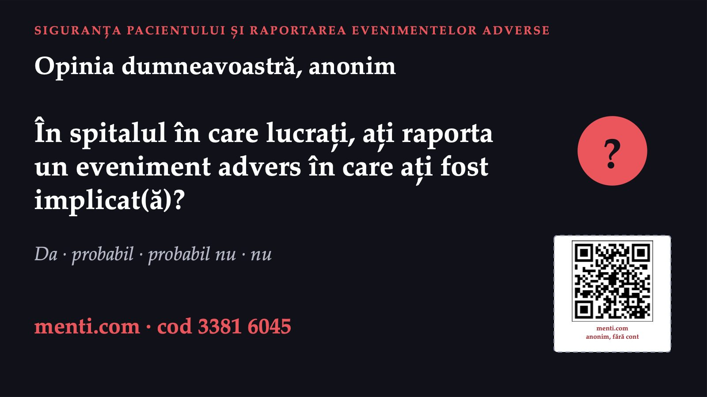
27 / 65Votul este anonim și cere o opinie. Pentru sistem contează ce v-ar face să raportați sau să nu raportați.
Sistemul de raportare propus în prezentare
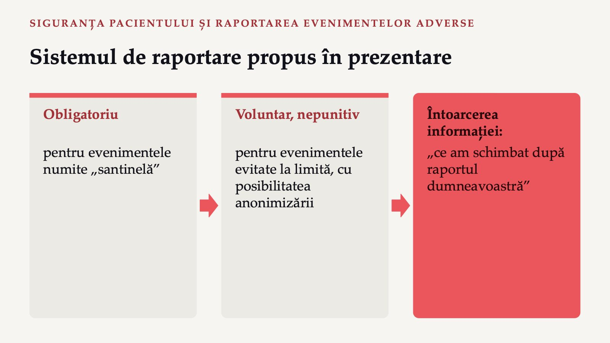
28 / 65Principiul este coerent cu legea: un sistem de raportare valorează cât ce învață organizația din el. Un raport care nu primește niciodată un răspuns scade raportarea următoare. Definiția evenimentului santinelă variază de la o organizație la alta și nu o dăm.
Infecțiile asociate asistenței medicale (IAAM)
![INFECȚIILE ASOCIATE ASISTENȚEI MEDICALE: SUPRAVEGHEREA ȘI SUBRAPORTAREA Infecțiile asociate asistenței medicale (IAAM) „infecții care apar în timpul sau după acordarea îngrijirilor medicale și care nu erau prezente sau în incubație la momentul internării” Focarul: „apariția a două sau mai multe cazuri de infecții cu aceeași etiologie, asociate unui spațiu și interval de timp comun într-o unitate sanitară” Ordinul ministrului sănătății nr. 1101/2016 art. 3: depistarea, înregistrarea, declararea, obligatorii art. 4: programul anual art. 7: atribuțiile în fișa postului](diapozitive/C14/029.jpg) 29 / 65
29 / 65Definițiile sunt cele operaționale ale Centrului European de Prevenire și Control al Bolilor (ECDC), preluate de Institutul Național de Sănătate Publică (INSP). Două criterii, aceeași etiologie și același loc și timp, transformă câteva cazuri izolate într-un focar. Ordinul nr. 1101/2016 are patru anexe, pe care nu le-am citit pentru aceste note; nu descriem conținutul lor ca fapt.
?
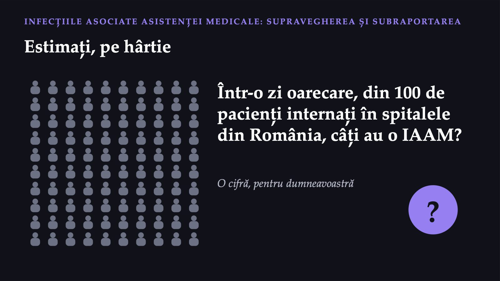
30 / 65Notați o cifră, numai pentru dumneavoastră; nu o colectăm. O comparăm imediat cu studiul național.
4,1%
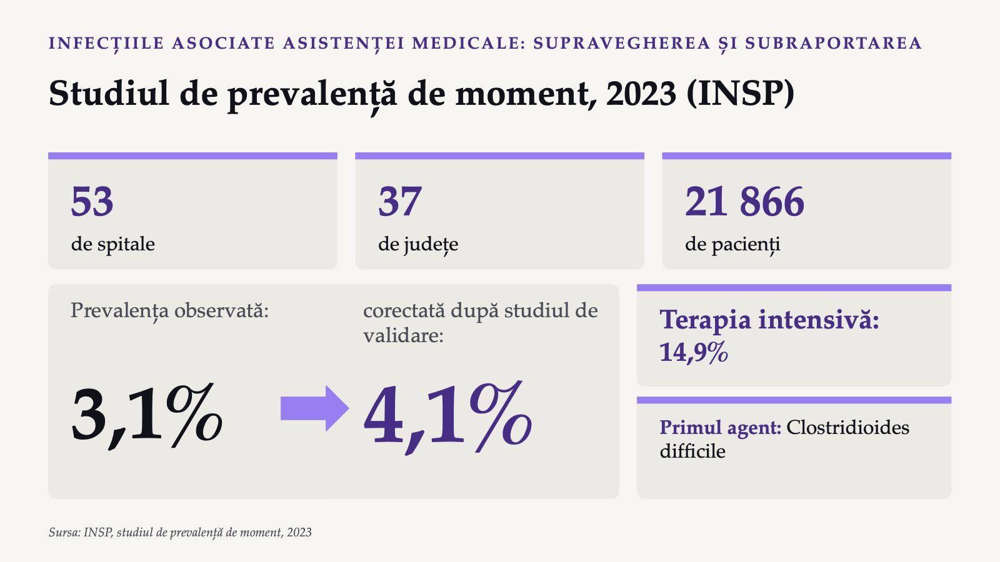
31 / 65Prevalența de moment este proporția pacienților care au o IAAM într-o zi dată, într-un eșantion de spitale; incidența numără cazurile noi într-o perioadă. Studiul s-a desfășurat între 15 mai și 15 iunie 2023. Au avut cel puțin o IAAM 674 de pacienți: prevalența observată este 3,1%, cu un interval de încredere între 2,5 și 3,8; cea corectată, 4,1%, cu un interval între 3,3 și 5,1. În secțiile chirurgicale prevalența a fost 2,5%, în cele medicale 3,4%. Cele mai frecvente localizări au fost infecțiile gastrointestinale, cu 28%, cele respiratorii, cu 24%, și cele urinare, cu 16%. După Clostridioides difficile au urmat Klebsiella și Pseudomonas. Prezentarea dă, pentru România, o rată de 11–15%, atribuită unui studiu european din 2011, și o rată oficială „sub 1%”. Studiul invocat, HALT, privește unitățile de îngrijire de lungă durată, nu spitalele; cifrele nu se confirmă.
Observat și corectat
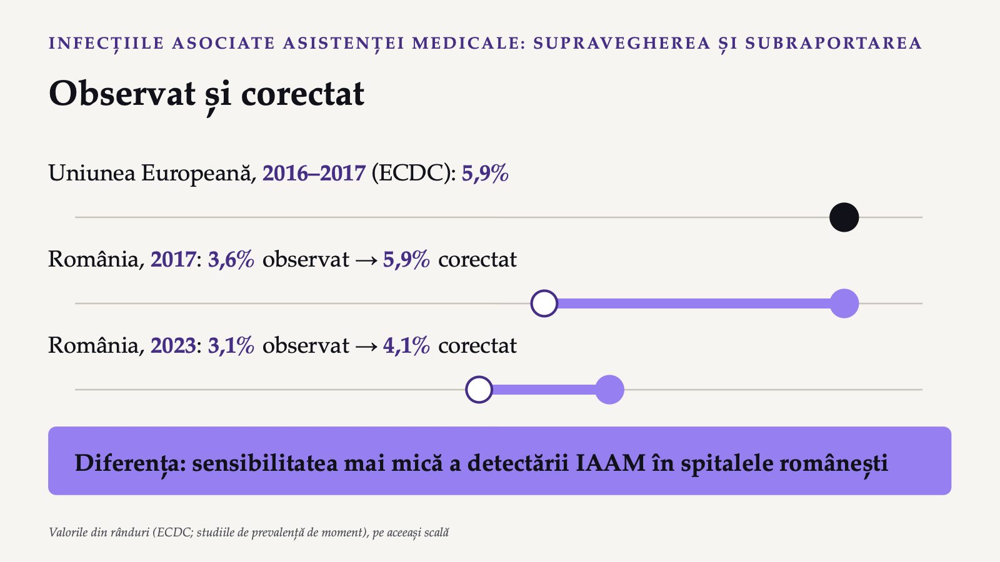
32 / 65Raportul explică diferența dintre prevalența observată și cea corectată: studiul de validare a arătat, deja în 2017, o sensibilitate mai mică a detectării IAAM în spitalele românești, adică infecții nerecunoscute sau neraportate. Diferența a fost mai mică în 2023 decât în 2017. Este problema pe care prezentarea o numea „subraportare”, dar cu valorile corecte.
De ce o rată mică poate fi un semnal
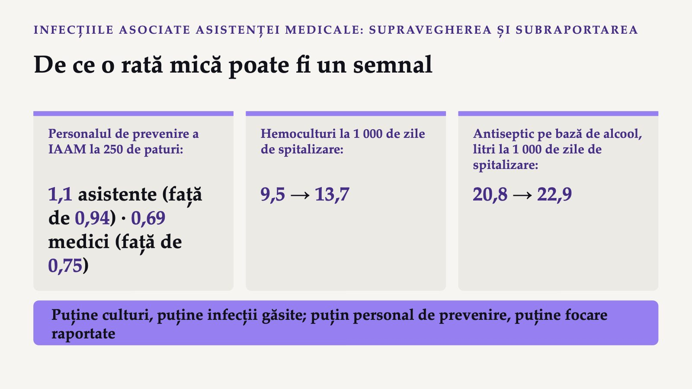
33 / 65Raportul INSP pe 2023 dă și indicatori de capacitate, utili pentru a judeca o rată raportată. Comparația este cu studiul anterior. Un spital care face puține culturi găsește puține infecții; un spital cu puțin personal de prevenire raportează puține focare.
189
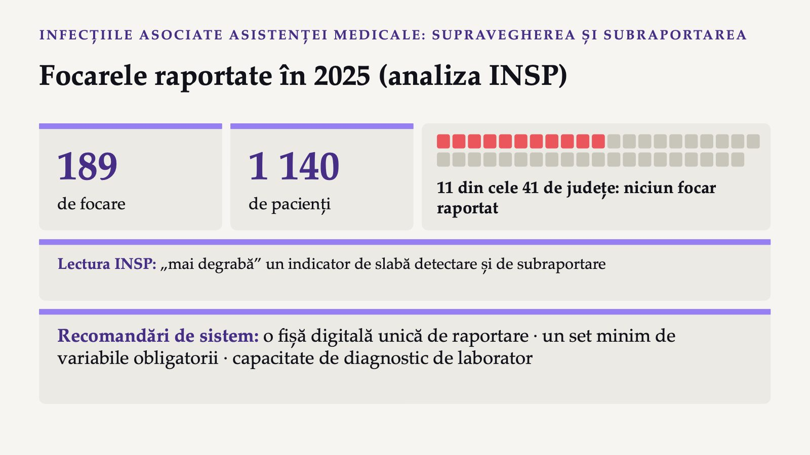
34 / 65Focarele au fost raportate de direcțiile de sănătate publică în baza Ordinului nr. 1101/2016. Între cauzele subraportării, autorii numără subdiagnosticarea, teama de consecințe administrative, lipsa personalului din serviciile de prevenire și lipsa unei culturi a siguranței. Terapia intensivă a fost pe primul loc între secții, iar la peste 5% dintre focare secția nu a fost raportată deloc. Profilul din 2016 observa, mai demult, că rata IAAM fusese inclusă în indicatorii de performanță ai managerilor: o rată mică arăta bine, chiar dacă era rezultatul nedetectării. Este un exemplu clasic de indicator care, legat de o sancțiune, își distruge propria valoare informativă.
Indicatorii de calitate
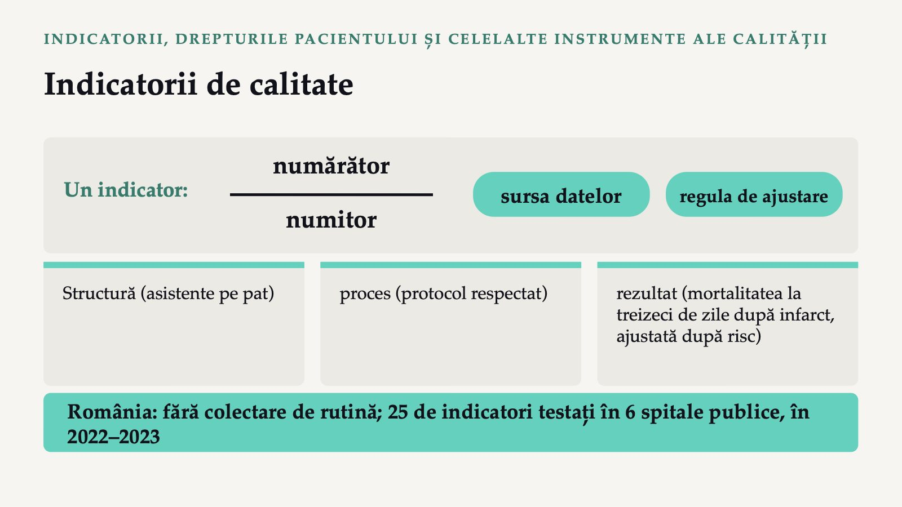
35 / 65Comparația între spitale cere aceeași definiție peste tot. Testarea celor 25 de indicatori s-a făcut în cadrul reformei din Planul Național de Redresare și Reziliență, cu sprijinul Organizației Mondiale a Sănătății, în vederea unei plăți legate de performanță. România nu are o strategie specifică a calității, iar strategia națională de sănătate 2023–2030 prevede un fond pentru calitate. Mortalitatea evitabilă în spital, adică decesele care nu ar fi trebuit să se producă dacă îngrijirea ar fi fost adecvată și la timp, cere ajustare după gravitatea cazurilor; altfel, spitalele care primesc pacienții cei mai grei par cele mai slabe. Comparația sistematică între spitale are sens numai dacă datele sunt complete; altfel clasamentul răsplătește spitalul care raportează cel mai puțin.
Legea nr. 46/2003 privind drepturile pacientului
![INDICATORII, DREPTURILE PACIENTULUI ȘI CELELALTE INSTRUMENTE ALE CALITĂȚII Legea nr. 46/2003 privind drepturile pacientului Art. 4 și 6 informarea: serviciile disponibile; starea de sănătate, intervențiile propuse, riscurile, alternativele Art. 11 dreptul de a cere și de a obține o altă opinie medicală (din martie 2026: a doua consultație plătită de asigurări, dacă este justificată) Art. 13 refuzul sau oprirea unei intervenții, cu asumarea în scris a răspunderii Art. 21 confidențialitatea informațiilor](diapozitive/C14/036.jpg) 36 / 65
36 / 65Prezentarea dă numerele articolelor greșit; le corectăm după textul consolidat. Legătura cu calitatea este dublă. Drepturile pacientului sunt o dimensiune a calității procesului: informarea, consimțământul, respectul. Apoi, un pacient informat este o sursă de semnalare: întrebarea unei familii despre o diaree apărută în spital poate fi primul semn al unui focar. Dreptul la a doua opinie există în lege, dar accesul la un al doilea specialist depinde de timp, de bani și de rețea.
Celelalte instrumente ale calității
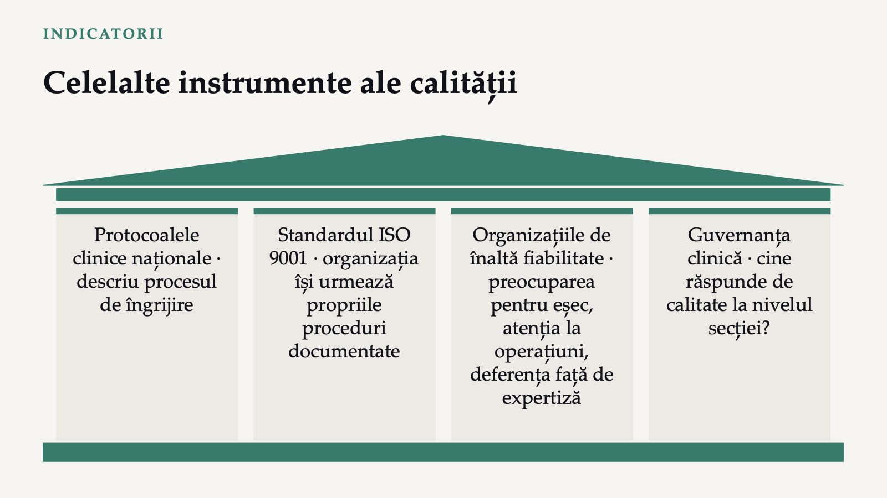
37 / 65Presupunem, fără să fi citit standardele ANMCS, că acreditarea verifică dacă spitalul are protocoalele și dacă le-a adaptat local, nu cât de des sunt respectate. Certificarea ISO arată că organizația își urmează propriile proceduri; acreditarea ANMCS compară procedurile cu standarde ale sectorului. Organizațiile de înaltă fiabilitate lucrează în condiții de risc ridicat cu foarte puține accidente grave; literatura le descrie prin cinci principii: preocuparea constantă pentru eșec, cu evenimentele evitate la limită ca ocazii de învățare, refuzul explicațiilor simplificate, atenția la ce se întâmplă efectiv, corectarea continuă a erorilor și deferența față de expertiză, indiferent de rang. Ideea utilă pentru spital: siguranța se produce zilnic, nu se certifică o dată. La întrebarea despre secție, spitalul românesc are un răspuns pe hârtie, șeful de secție, structura de management al calității și serviciul de prevenire a infecțiilor, și unul în practică, pe care îl vedem la Spitalul A.
Ce a schimbat acreditarea și ce rămâne deschis
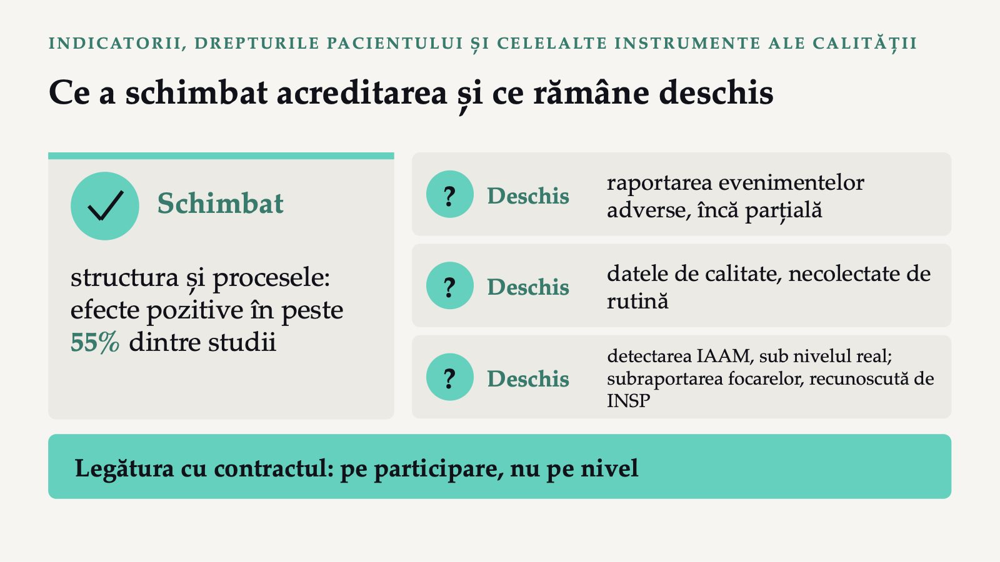
38 / 65Revizuirea lui Hussein și colaboratorii confirmă, cu o metodă explicită, imaginea din prezentare: efecte consistente pentru cultura siguranței și pentru procese, contradictorii pentru mortalitate și pentru IAAM. ANMCS lucrează la o nouă ediție a standardelor. Planul global de acțiune pentru siguranța pacientului al Organizației Mondiale a Sănătății pentru 2021–2030 nu a putut fi citit; nu descriem conținutul lui.
Ce reținem din prima parte
![INDICATORII, DREPTURILE PACIENTULUI ȘI CELELALTE INSTRUMENTE ALE CALITĂȚII Ce reținem din prima parte Acreditarea validează conformitatea și încadrează pe categorii; nu măsoară direct rezultatele clinice Planul de conformare ține de autorizația sanitară; durata lui este un criteriu de încadrare Contractul cere acreditarea sau înscrierea; categoria nu îl schimbă O evaluare periodică vede structura, parțial procesul, rezultatul numai prin datele spitalului O rată mică de IAAM raportate poate însemna detectare slabă](diapozitive/C14/039.jpg) 39 / 65
39 / 65Acestea sunt ideile cu care intrăm în conferință. Spitalul A le pune la încercare pe toate.
Pauză
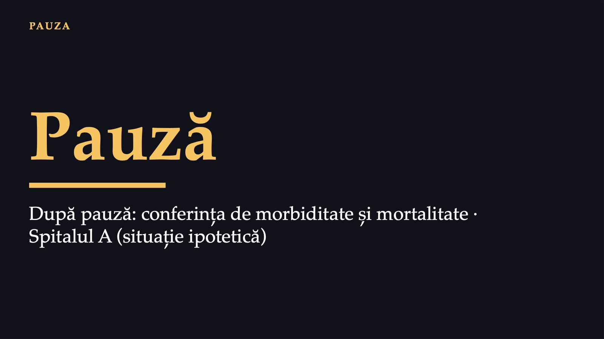
40 / 65În a doua parte a cursului, Spitalul A devine cazul conferinței noastre.
?
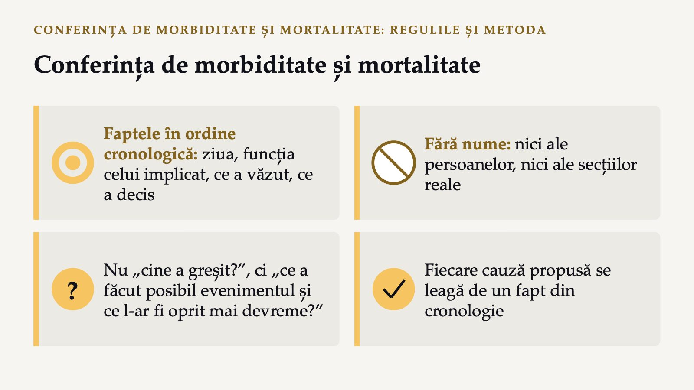
41 / 65Conferința de morbiditate și mortalitate este o întâlnire periodică a echipei în care se discută cazurile cu complicații sau decese, cu reguli stabile. Se caută ce a permis evenimentul și se încheie cu măsuri. Este un instrument de învățare, nu de sancționare. Respectăm aceste patru reguli în sală.
Analiza cauzei rădăcină: patru pași
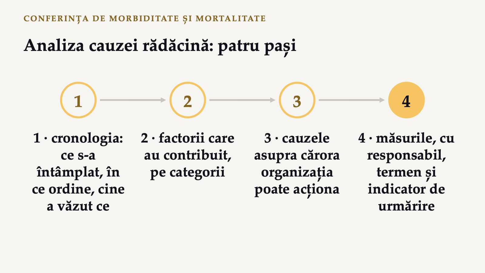
42 / 65Analiza cauzei rădăcină, „root cause analysis” în literatura de limbă engleză, reconstituie un eveniment advers și caută cauzele lui de sistem, nu doar cauza imediată. Azi parcurgem toți cei patru pași pe Spitalul A: cronologia acum, factorii pe diagrama Ishikawa, o cauză în adâncime, apoi măsurile, în activitatea individuală.
Spitalul A, înainte de focar
 43 / 65
43 / 65Toate cifrele Spitalului A sunt ipotetice. Grupurile sanitare din corpul vechi sunt funcționale, dar vechi și puține; planul de conformare care le privește este încă în termen.
pacientul 1, 78 de ani, internat de șase zile pentru pneumonie, cu antibiotic și inhibitor al pompei de protoni: trei scaune diareice
![Situație ipotetică CONFERINȚA: CRONOLOGIA SPITALULUI A (SITUAȚIE IPOTETICĂ) Ziua 1, luni pacientul 1, 78 de ani, internat de șase zile pentru pneumonie, cu antibiotic și inhibitor al pompei de protoni: trei scaune diareice Medicul de gardă notează diareea și recomandă hidratare; nu se cere test pentru Clostridioides difficile Ziua 3, miercuri pacientul 2, din același salon: diaree Asistenta-șefă anunță medicul curant, care cere testul pentru toxină; laboratorul lucrează numai în zilele lucrătoare, până la prânz; proba ajunge după-amiază](diapozitive/C14/044.jpg) 44 / 65
44 / 65Urmăriți, la fiecare zi, cine a văzut ce și ce a decis. Notați pentru dumneavoastră momentele în care un alt răspuns ar fi schimbat cursul.
testul pacientului 2: pozitiv · cazul este înregistrat ca IAAM · serviciul de prevenire este anunțat
![Situație ipotetică CONFERINȚA: CRONOLOGIA SPITALULUI A (SITUAȚIE IPOTETICĂ) Ziua 4, joi testul pacientului 2: pozitiv · cazul este înregistrat ca IAAM · serviciul de prevenire este anunțat Pacientul 2 este mutat într-un salon cu un pat liber, care folosește aceeași toaletă comună Ziua 5, vineri pacientul 1, testat: pozitiv · al treilea caz, în salonul vecin Recomandări: precauții de contact, apă și săpun, cum cere protocolul spitalului, produs sporicid · produsul lipsește din secție; firma de curățenie folosește produsul obișnuit](diapozitive/C14/045.jpg) 45 / 65
45 / 65Precauțiile de contact înseamnă mănuși și halate de unică folosință. Produsul sporicid lipsește din secție pentru că achiziția este întârziată.
cinci cazuri · pacientul 4, 88 de ani, se agravează și este transferat în terapia intensivă, fără informația că face parte dintr-un focar
![Situație ipotetică CONFERINȚA: CRONOLOGIA SPITALULUI A (SITUAȚIE IPOTETICĂ) Ziua 7, duminică cinci cazuri · pacientul 4, 88 de ani, se agravează și este transferat în terapia intensivă, fără informația că face parte dintr-un focar Ziua 8, luni focarul este declarat la direcția de sănătate publică · managerul convoacă comitetul de prevenire a infecțiilor Măsuri: oprirea internărilor programate o săptămână · cohortarea într-un salon cu toaletă proprie, amenajată provizoriu · achiziția de urgență a produsului · instruirea personalului de curățenie Ziua 10 pacientul 4 decedează; infecția este trecută drept cauză contributivă](diapozitive/C14/046.jpg) 46 / 65
46 / 65Focarul este declarat de serviciul de prevenire abia în ziua 8, după cinci cazuri.
0,4%
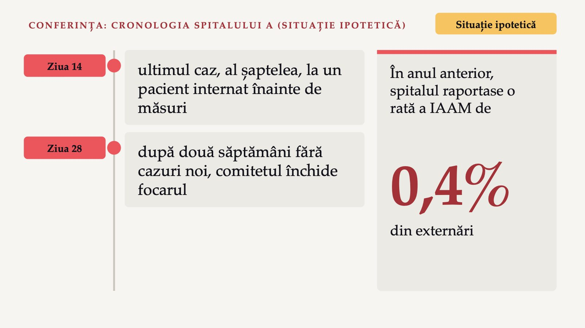
47 / 65Rețineți ultima cifră; o punem lângă studiul național când ne întrebăm ce a văzut acreditarea.
Cine a văzut ce
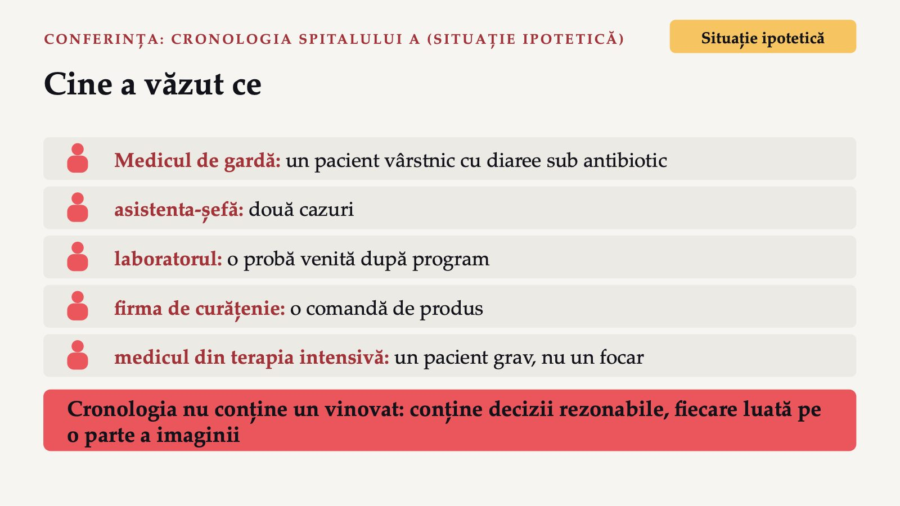
48 / 65Cronologia nu conține un vinovat. Conține decizii rezonabile, luate de oameni care au văzut fiecare o parte.
?
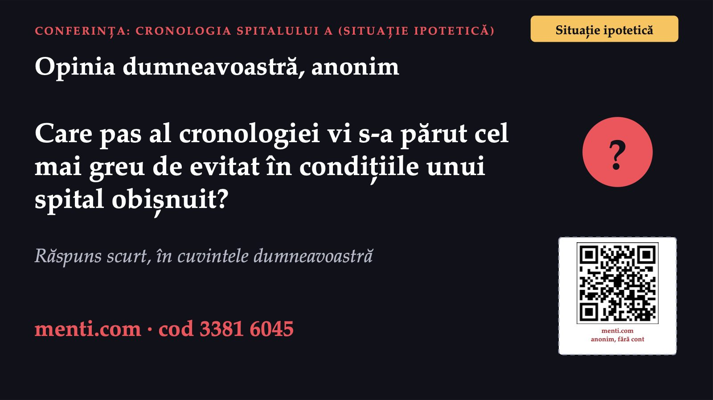
49 / 65Întrebarea cere o opinie. Gândiți-vă la spitalul în care lucrați acum.
Diagrama Ishikawa (cauză–efect, „os de pește”)
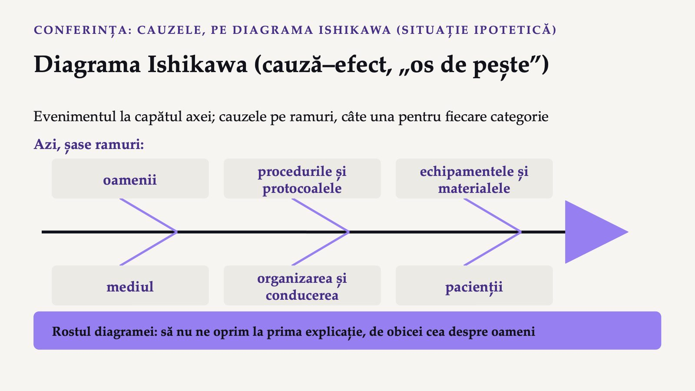
50 / 65Diagrama nu trebuie să fie completă. Trebuie să împiedice oprirea la prima explicație.
Peretele „Cauzele focarului · Spitalul A (situație ipotetică)”
![Situație ipotetică CONFERINȚA: CAUZELE, PE DIAGRAMA ISHIKAWA (SITUAȚIE IPOTETICĂ) Peretele „Cauzele focarului · Spitalul A (situație ipotetică)” Fiecare pune cel puțin o cauză, într-un singur rând, în coloana ei, legată de un fapt din cronologie Oamenii: personalul și pregătirea lui Procedurile și protocoalele Echipamentele și materialele Mediul: spațiul, circuitele, curățenia Organizarea și conducerea Pacienții Fără nume de persoane, de secții sau de spitale reale · postări anonime · nu se notează](diapozitive/C14/051.jpg) 51 / 65
51 / 65Peretele se deschide de pe telefon sau de pe laptop, prin codul proiectat. Câteva întrebări ajută fiecare coloană. La oameni: cine știa ce semn să urmărească și cine avea timp să-l urmărească? La proceduri: când cere protocolul testarea și cine o declanșează? La echipamente și materiale: ce lipsea în ziua în care trebuia folosit? La mediu: pe unde circula infecția, fizic? La organizare: ce decizii luate departe de secție, cum sunt achizițiile, contractele, normele, ocuparea paturilor, au contat? La pacienți: ce factori de risc aveau și ce tratamente îi făceau mai vulnerabili? La final citim împreună coloanele și grupăm cauzele care se repetă.
Factorii favorizanți din focarele reale (analiza INSP a focarelor din 2025)
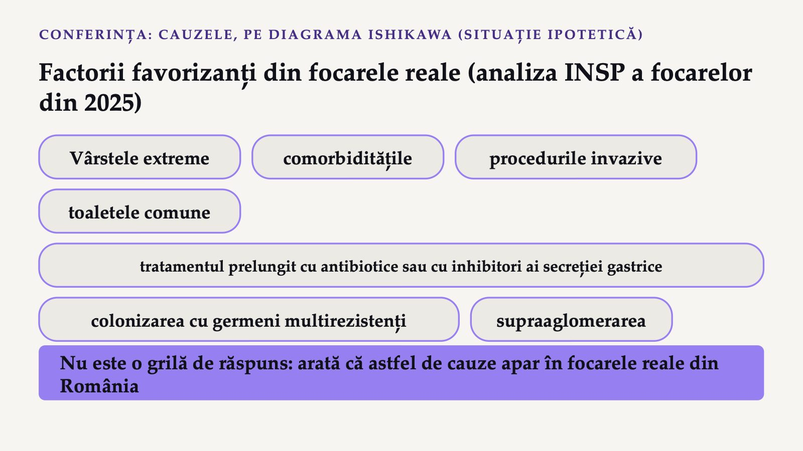
52 / 65Lista vine din analiza INSP a focarelor raportate în 2025. Nu verifică peretele dumneavoastră; arată că astfel de cauze apar în focarele reale din România.
„Cinci de ce” pe o singură cauză
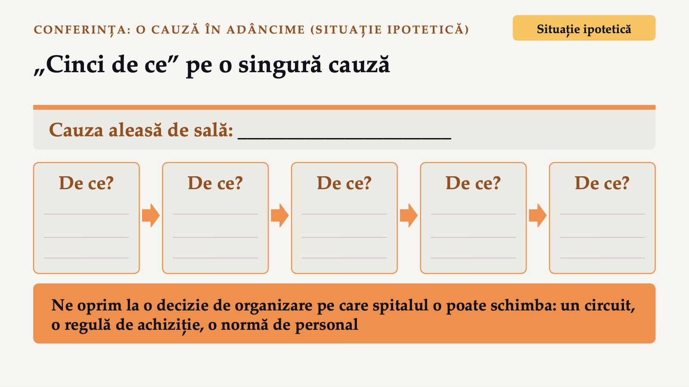
53 / 65Metoda ia o singură cauză și întreabă de mai multe ori, succesiv, „de ce?”. Numărul cinci este orientativ. Lanțul se oprește când răspunsul următor iese din puterea organizației sau când a ajuns la o decizie de organizare. Riscul metodei este să urmeze un singur fir și să piardă celelalte; de aceea o folosim după diagrama Ishikawa, nu în locul ei.
Răspunsul apare după ședință
Răspunsul apare după ședință
?
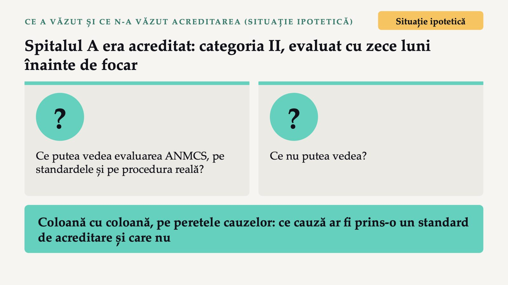
55 / 65Aceasta este întrebarea centrală a ședinței. Răspundem pe textele citite în prima parte, nu pe impresii.
?
![Situație ipotetică CE A VĂZUT ȘI CE N-A VĂZUT ACREDITAREA (SITUAȚIE IPOTETICĂ) Putea vedea programul anual de supraveghere și prevenire a IAAM atribuțiile din fișele posturilor indicatorii critici în ziua vizitei, inclusiv grupurile sanitare planul de conformare, care a împiedicat categoria I ? Presupus, fără standardele citite protocolul de prevenire, serviciul de prevenire, registrele, rata raportată Nu putea vedea ocuparea și asistentele de noapte în săptămâna focarului când se cere testul și programul laboratorului ruptura de stoc de după vizită informația la transfer dacă rata raportată este reală](diapozitive/C14/056.jpg) 56 / 65
56 / 65O rată de 0,4% din externări nu se compară direct cu prevalența de moment din studiul național, care este alt indicator. Distanța mare dintre ele este însă un semnal care cere verificarea detectării, așa cum INSP citește lipsa focarelor raportate în 11 județe. Standardele ANMCS ale celui de-al doilea ciclu nu le-am citit; de aceea separăm ce se poate afirma pe texte de ce presupunem.
Ce poate vedea sistemul între evaluări
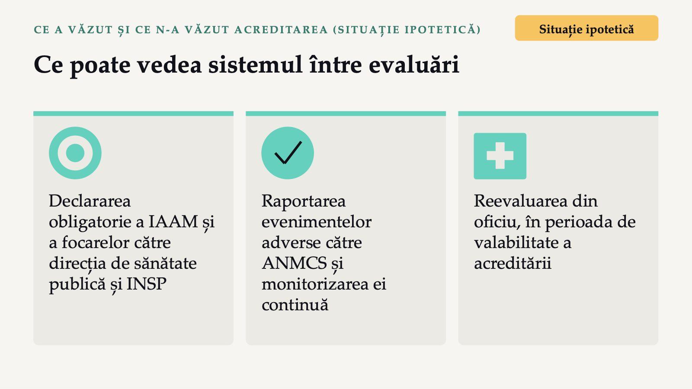
57 / 65Acreditarea nu este instrumentul care oprește un focar într-o săptămână; este instrumentul care verifică, o dată la câțiva ani, dacă spitalul are mijloacele să-l oprească. Focarul Spitalului A arată distanța dintre a avea mijloacele și a le folosi la timp.
?
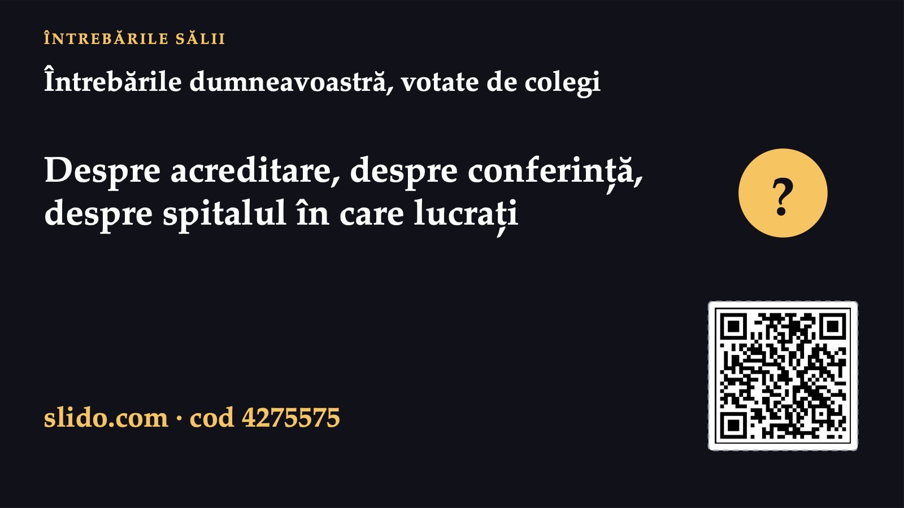
58 / 65Scrieți întrebarea pe care o aveți, anonim, și votați întrebările colegilor pe care le vreți lămurite și dumneavoastră. Cele mai votate primesc răspuns acum.
Concluzia conferinței, individual: cel mult o pagină, șase rânduri numerotate
![Situație ipotetică ACTIVITATEA INDIVIDUALĂ: CONCLUZIA CONFERINȚEI (SITUAȚIE IPOTETICĂ) Concluzia conferinței, individual: cel mult o pagină, șase rânduri numerotate 1 · evenimentul, fără nume și fără vinovat, într-o frază 2 · cauza de sistem aleasă, cu faptul din cronologie care o susține 3 · măsura de sistem: o regulă sau o schimbare de organizare, nu un îndemn 4 · responsabilul, numit prin funcție · 5 · termenul 6 · indicatorul: numărător, numitor, sursa datelor, pragul urmărit; plus un indicator de echilibru Pe hârtie sau pe laptop · douăzeci de minute](diapozitive/C14/059.jpg) 59 / 65
59 / 65Aveți cronologia Spitalului A și diagrama completată de sală. Indicatorul de echilibru este un efect nedorit pe care îl urmăriți în paralel. Structura este cea a unei concluzii de conferință, nu un formular oficial. La final, câțiva dintre dumneavoastră citesc concluzia, iar colegii verifică un singur lucru: dacă indicatorul ar măsura efectiv măsura propusă.
Câteva concluzii, citite în sală
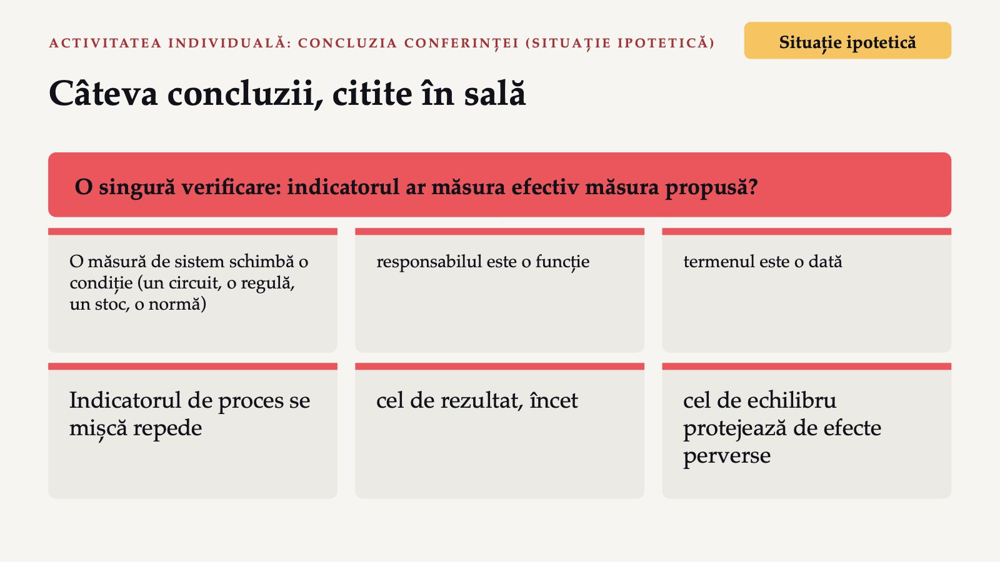
60 / 65O măsură de sistem nu cere oamenilor „mai multă atenție”. Responsabilul este o funcție, pentru că oamenii se schimbă. Un indicator de proces, de exemplu proporția cazurilor de diaree apărute în spital testate în prima zi, se mișcă repede; un indicator de rezultat, de exemplu incidența infecțiilor cu Clostridioides difficile dobândite în spital, raportată la zilele de spitalizare, se mișcă încet și cere ani. Dacă detecția crește, numărul cazurilor raportate poate crește la început, iar aceasta este o veste bună, nu un eșec.
Cum se poate întâmpla un focar într-un spital acreditat?
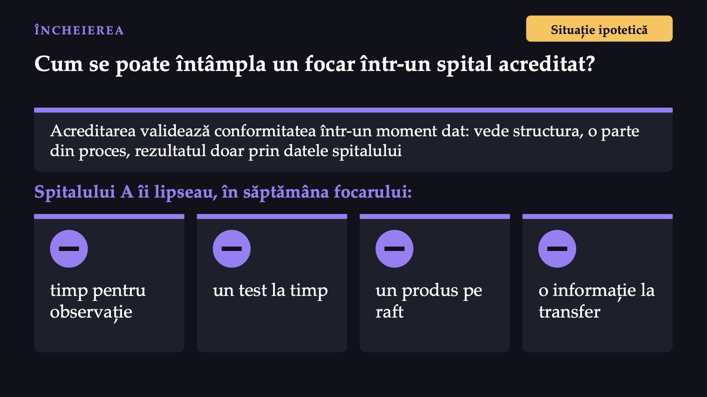
61 / 65Ne întoarcem la întrebarea de la început. Spitalul A avea structurile. Îi lipseau câteva condiții care nu apar la o vizită.
Răspunsul apare după ședință
Răspunsul apare după ședință
?
63 / 65Întrebările rămase sunt anonime; le citim după curs și le reluăm la ședința următoare.
?
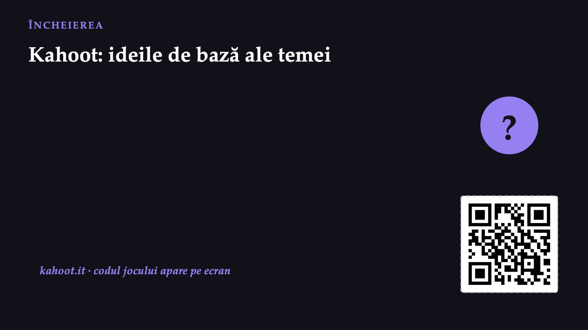
64 / 65Întrebările verifică ideile de bază ale temei, nu cifre, articole de lege sau date din rapoarte.
?
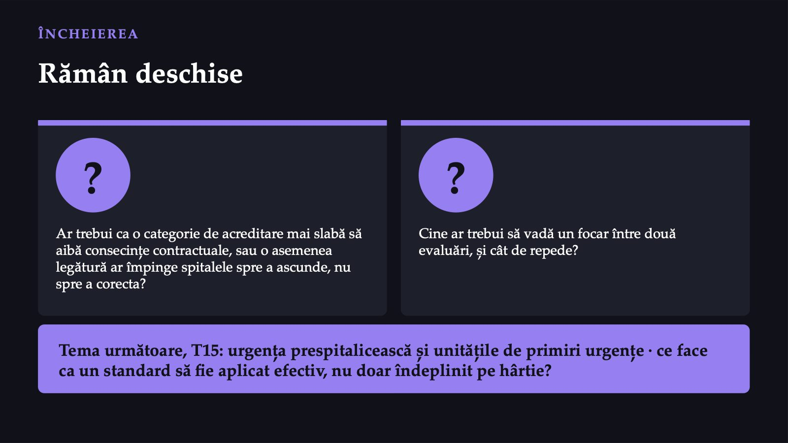
65 / 65Acreditarea nu a eșuat: a construit un cadru de standarde și de participare obligatorie, cu efecte dovedite mai ales asupra structurii și proceselor, în timp ce măsurarea rezultatelor și raportarea evenimentelor rămân incomplete. Tema următoare privește sistemul de urgență, o reformă care s-a sprijinit pe standarde aplicate și pe o organizare unitară. Vă mulțumesc.
Săgeți sau spațiu: navigare · O: vedere de ansamblu · N: notele prezentatorului · F: ecran complet · Esc: închidere